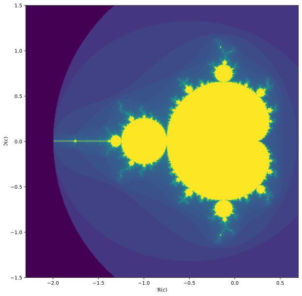
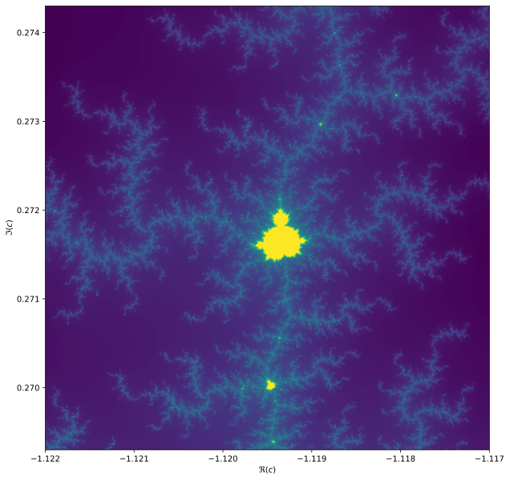
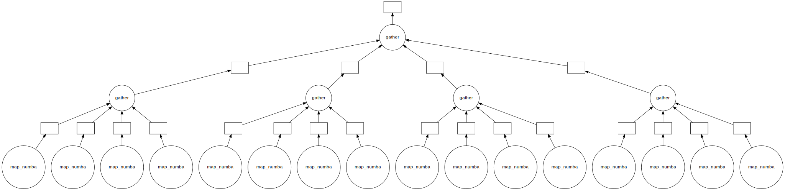
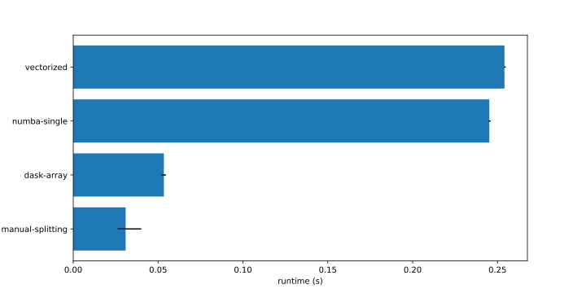
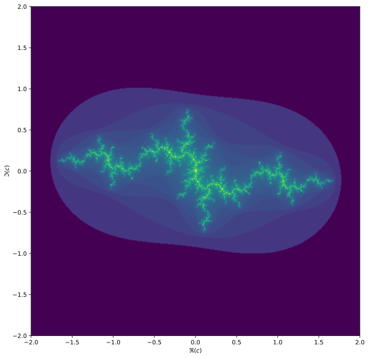

Exercise in modular programming: the Mandelbrot set
This exercise uses Numpy, Matplotlib, Numba and Dask.
«imports»
from matplotlib import pyplot as plt
import numpy as np
import numba
from dask import array as da
from dask import delayed
from typing import Callable
ComplexToInt = Callable[(complex,), int]
from dataclasses import dataclassWe will be computing the famous Mandelbrot fractal. The Mandelbrot set is the set of complex numbers \(c \in \mathbb{C}\) for which the iteration,
\[z_{n+1} = z_n^2 + c,\]
converges, starting iteration at \(z_0 = 0\). We can visualize the Mandelbrot set by plotting the number of iterations needed for the absolute value \(|z_n|\) to exceed 2 (for which it can be shown that the iteration always diverges).
We may compute the Mandelbrot as follows.
max_iter = 256
width = 256
height = 256
center = -0.8+0.0j
extent = 3.0+3.0j
scale = max((extent / width).real, (extent / height).imag)
result = np.zeros((height, width), int)
for j in range(height):
for i in range(width):
c = center + (i - width // 2 + (j - height // 2)*1j) * scale
z = 0
for k in range(max_iter):
z = z**2 + c
if (z * z.conjugate()).real > 4.0:
break
result[j, i] = kThen we can plot with the following code:
fig, ax = plt.subplots(1, 1, figsize=(10, 10))
plot_extent = (width + 1j * height) * scale
z1 = center - plot_extent / 2
z2 = z1 + plot_extent
ax.imshow(result**(1/3), origin='lower', extent=(z1.real, z2.real, z1.imag, z2.imag))
ax.set_xlabel("$\Re(c)$")
ax.set_ylabel("$\Im(c)$")
Things become really loads of fun when we start to zoom in. We can play around with the center and extent values (and necessarily max_iter) to control our window.
max_iter = 1024
center = -1.1195+0.2718j
extent = 0.005+0.005jWhen we zoom in on the Mandelbrot fractal, we get smaller copies of the larger set!

Exercise 1: modularize this code
This is not even the worst code. Variables are aptly named and the code is nicely parametrized. However, this code utterly lacks in modularity. The author has never heard of classes or functions! Try to improve this code to get less repetition and better isolation of concerns, while at the same time bundling things that belong together. To achieve this you should consider using functions to isolate functionality, while using classes to bundle things that are related.
Create a BoundingBox class
One piece of information that we might want to bundle is the BoundingBox of the fractal. Then we can think about the actions that we perform on the bounding-box that are generic enough so that we may put them in the BoundingBox class as a method. We collect the information on the width and height of the resulting image, together with the center coordinate and the extent in terms of the complex number plane.
«bounding-box»
@dataclass
class BoundingBox:
width: int
height: int
center: complex
extent: complex
<<bounding-box-methods>>We will do some testing and benchmarking on the following box:
«define-test-box»
box = BoundingBox(1024, 1024, -1.1195+0.2718j, 0.005+0.005j)Mapping
In the initial code, we had the following loop structure:
«mapping»
result = np.zeros((height, width), int)
for j in range(height):
for i in range(width):
c = center + (i - width // 2 + (j - height // 2)*1j) * scale
<<compute-k>>
result[j, i] = kThen for <<compute-k>> we had the explicit computation of a pixel value for the Mandelbrot fractal. It would be much better if that is done through a generic method.
«bounding-box-methods»
def map(self, f) -> np.array:
width = self.width
height = self.height
center = self.center
scale = self.scale
<<mapping>>
return resultNow, for <<compute-k>> we have the very generic:
«compute-k»
k = f(c)Notice that I used the member BoundingBox.scale, which we haven’t defined yet:
«bounding-box-methods»
@property
def scale(self) -> float:
return max(self.extent.real / self.width,
self.extent.imag / self.height)The Mandelbrot iteration
Now we need to put the inner-most loop in a separate function. From the first code we had the following:
«compute-mandelbrot»
z = 0
for k in range(max_iter):
z = z**2 + c
if (z * z.conjugate()).real > 4.0:
breakTo create a function that takes a complex and returns an int, we need to capture the max_iter variable in some way. In one function, this would be something like:
def mandelbrot(max_iter: int, c: complex) -> int:
<<compute-mandelbrot>>
return kTo create a function that only takes a single complex argument, we need to write a function that captures max_iter and returns a function of only c:
«mandelbrot-iteration»
def mandelbrot(max_iter: int):
def mandelbrot_iter(c: complex) -> int:
<<compute-mandelbrot>>
return k
return mandelbrot_iterThis pattern is so common that it has a name: currying, after the famous mathematician Haskell Curry.
Write a plot function
Now that we have a generic BoundingBox class, we can write a plotting function. We could make this a method of BoundingBox, but there is a good reason not to: again, modularity. Not everyone may like our plotting function, by having it separate from the class, we can swap out the plotting function for another one more easily.
«plot-fractal»
def plot_fractal(box: BoundingBox, result: np.array):
fig, ax = plt.subplots(1, 1, figsize=(10, 10))
plot_extent = (box.width + 1j * box.height) * box.scale
z1 = box.center - plot_extent / 2
z2 = z1 + plot_extent
ax.imshow(result**(1/3), origin='lower', extent=(z1.real, z2.real, z1.imag, z2.imag))
ax.set_xlabel("$\Re(c)$")
ax.set_ylabel("$\Im(c)$")
return fig, axChoosing wether to bundle things into a class or keep them separate is sometimes a hard choice. Don’t worry about getting it right from the get go.
Conclusion
What have we gained by refactoring our code like this? We now have separated the outer-loop structure from inner-loop functionality. We can now do several things:
- optimize the different components
- swap out the mapping function for a parallel version
- swap out the function to compute a different fractal
As an added bonus: our code has become more readable and thus better maintainable.
Exercise 2: optimise using Numba
The code we have is terribly slow. We can make it faster by optimizing with Numba. It is often a good idea to start optimization with the inner-most loop.
«using-vectorize»
mandelbrot_vectorized = numba.vectorize()(mandelbrot(1024))By using the vectorize decorator, we immediately have the nice functionality that we can call this function with numpy arrays and everything works as expected. We actually don’t need the mapping function now:
«using-vectorize»
benchmark("vectorized", lambda: mandelbrot_vectorized(box.grid()))Here, the grid method returns a 2-dimensional array of complex values that give the values of the complex plane for each pixel in the bounding box.
«bounding-box-methods»
def grid(self) -> np.array:
x0 = self.center - self.extent / 2
x1 = self.center + self.extent / 2
g = np.indices([self.height, self.width])
return self.center + (g[1] - self.width // 2 + (g[0] - self.height // 2)*1j) \
* self.scaleOptimise the outer loop
We have no optimized the inner loop. We could also optimise the outer loop using numba. Since we want to create a function that does not live in the GIL, it cannot be a class method: all arguments must be primitive types. The advantages of doing this over using Numpy are:
- The entire computation now lives outside the GIL
- We save a bit of memory
The downside is: we need to specialize for mapping complex to integer functions.
«numba-int-map»
@numba.jit(nopython=True, nogil=True)
def _int_map(f: ComplexToInt, width: int, height: int, center: complex, scale: complex):
result = np.zeros((height, width), np.int64)
for j in range(height):
for i in range(width):
z = center + (i - width // 2 + (j - height // 2) * 1j) * scale
result[j, i] = f(z)
return result«bounding-box-methods»
def map_numba(self, f) -> np.array:
return _int_map(f, self.width, self.height, self.center, self.scale)We’ll be benchmarking all our solutions (except the native Python one):
«using-numba»
mb = numba.njit(nogil=True)(mandelbrot(1024))
mb(0) # run once to compile
benchmark("numba-single", lambda: box.map_numba(mb))Exercise 3: parallelize
For further speed-up, we need to run our fractal renderer in parallel. Since we already have a vectorised function, we can try to plug a dask.array directly in, and see if we can get any faster.
«using-dask-array»
mb = numba.vectorize([numba.int64(numba.complex128)])(mandelbrot(1024))
mb(0) # run once to compile
benchmark("dask-array", lambda: mb(da.from_array(box.grid(), chunks=(128, 128))).compute())Domain splitting
We could do better by splitting our domain manually and using the map_numba method to do the mapping, then numpy.block to rejoin each part. The following method splits the domain into n x n subdomains, returing a nested list of BoundingBox objects.
«bounding-box-methods»
def split(self, n):
sd = self.extent / n
x0 = self.center - self.extent / 2 + sd / 2
return [[BoundingBox(width=self.width//n, height=self.height//n,
center=x0 + i * sd.real + j * sd.imag * 1j,
extent=sd) for i in range(n)]
for j in range(n)]We can now chunk the domain, and build a workflow using the dask.delayed interface. One function that I keep defining for its infinite usefulness is gather: it converts a list of promises into promise of a list.
«gather»
@delayed
def gather(*args):
return list(args)We add a benchmark to the list:
«using-manual-splitting»
<<gather>>
def split_domain_map(box, f, n=8, num_workers=None):
wf = gather(*[gather(*[delayed(sub_domain.map_numba)(f)
for sub_domain in row])
for row in box.split(n)])
return np.block(wf.compute(num_workers=num_workers))
mb = numba.njit(nogil=True)(mandelbrot(1024))
mb(0) # run once to compile
benchmark("manual-splitting", lambda: split_domain_map(box, mb))Visualizing this workflow:

That was a bit of extra work compared to using vectorize and dask.array. Let’s see if it pays off.
Benchmark results
Considering the amount of work needed to implement the dask.array version, it parallelizes rather well. It is no match however for our hand coded domain splitting solution. For the following results, we ran the above codes on subdomains of 8x8 tiles (so 128x128 each). The hand coded solution runs nearly ten times faster on an 8-core Intel machine, and twice as fast as the dask.array version.

Bonus: Julia sets
For each value \(c\) we can compute the Julia set, namely the set of starting values \(z_1\) for which the iteration over \(z_{n+1}=z_n^2 + c\) converges. Every location on the Mandelbrot image corresponds to its own unique Julia set.
max_iter = 256
center = 0.0+0.0j
extent = 4.0+3.0j
scale = max((extent / width).real, (extent / height).imag)
result = np.zeros((height, width), int)
c = -1.1193+0.2718j
for j in range(height):
for i in range(width):
z = center + (i - width // 2 + (j - height // 2)*1j) * scale
for k in range(max_iter):
z = z**2 + c
if (z * z.conjugate()).real > 4.0:
break
result[j, i] = kIf we take the center of the last image, we get the following rendering of the Julia set:

It is not too hard to adapt the above code for the Mandelbrot fractal to the Julia fractal.